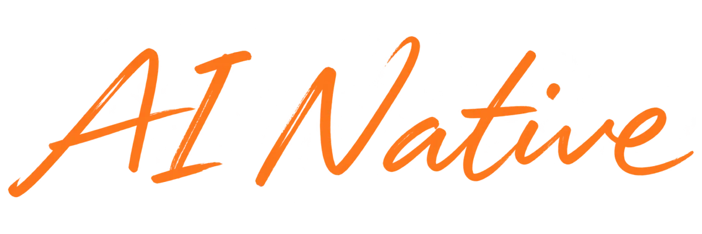
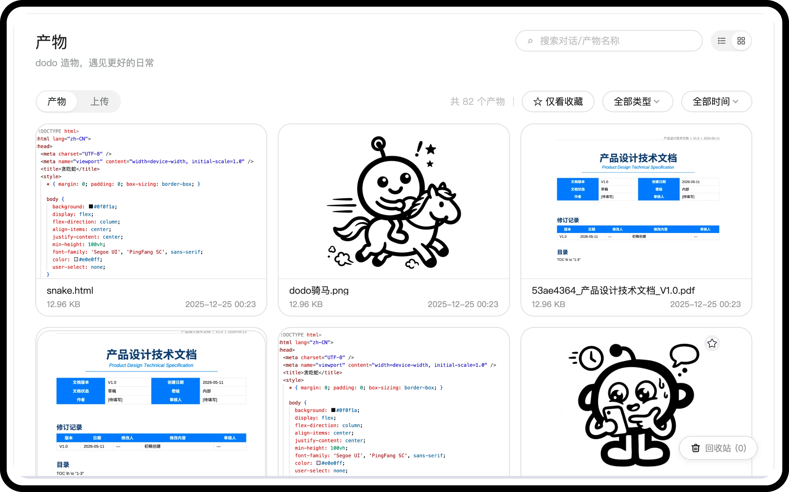

UX / Product Designer · 2026
有 AI 工作流，懂用户，
能推动事情发生

精选项目 · Selected work
同一套动态项目卡片，仅调整首页整体布局 CNAP 云原生工作负载管理通过用户调研重构部署与运维体验
CNAP 云原生工作负载管理通过用户调研重构部署与运维体验

AI 设计工作流实践与复盘把设计判断沉淀为规范与 Skills 主动式 AI 记忆助手从模糊需求到 MVP 落地
主动式 AI 记忆助手从模糊需求到 MVP 落地
 小红书本地生活打通种草到交易的转化链路
小红书本地生活打通种草到交易的转化链路

 职场人的阅读学习 APP让碎片输入沉淀为个人知识
职场人的阅读学习 APP让碎片输入沉淀为个人知识
05 PROJECTS · HOVER TO EXPLORE